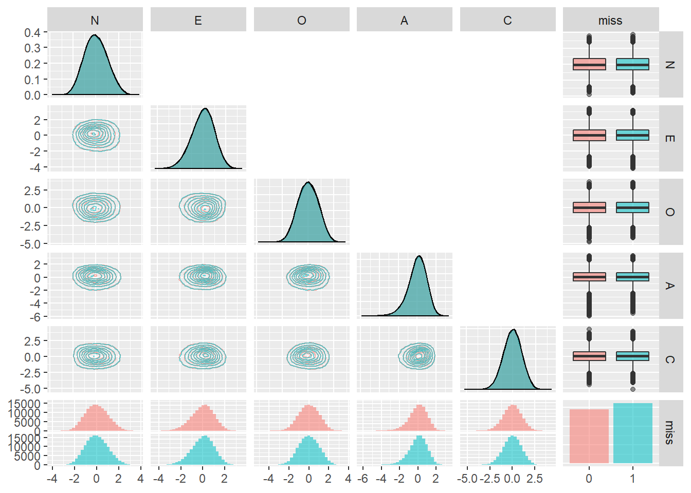

必要なパッケージを読み込みます。
library(psych)
library(GPArotation)
library(tidyverse)
library(GGally)Gerlachらは無回答項目が1項目でもある 回答者は解析から除外していました。実は， そういう回答者は全体の半分以上います。それでも IPIP-NEO-300では完全回答した回答者が15万人近くいるので，十分なサンプル数は得られるのですが，そこには 「完全にもれなく回答できる人」というサンプリングバイアスが 働いているのではないか，と気になります。 例えば，そういう人は誠実性が高い，という可能性はないでしょうか。
ここでは，IPIP-NEO-300に関して，無回答項目がある回答者についても 同じ因子分析モデルを用いて因子スコアを求め， 完全な回答者との間に違いがないか確認してみます。
ここでは基本的には実データ (Johnson-300) の解析1の流れ に沿って分析します。
nmax <- Inf # 読み込む最大行数 最初は小さくして試す
dat.raw <- scan(file = "C:/data/personality/IPIP300.dat",
nmax = nmax, what = character(), sep = "\n")
n.data <- length(dat.raw)
dat.matrix <- matrix(0, nrow = n.data, ncol = 300)
dat.matrix.incomplete <- matrix(0, nrow = n.data, ncol = 300)
n.used.data <- 0
n.incomplete <- 0
count.missing <- array(n.data)
for (idx in 1:n.data){
# 回答があるのは34列目から333列目
# そこを抜き出す
tmp <- substring(dat.raw[[idx]],34, 333)
tmp.numeric <- as.numeric( unlist(strsplit(tmp,"")))
count.missing[idx] <- sum(tmp.numeric == 0)
if (!any(tmp.numeric == 0)) {
# 一つでも無回答 (0) がある回答者
n.used.data <- n.used.data + 1
dat.matrix[n.used.data,] <- tmp.numeric
} else if (sum(tmp.numeric == 0) <= 20) {
# 無回答の項目が20以下の回答者
n.incomplete <- n.incomplete + 1
# 無回答は0になっているので，NAに
tmp.numeric[tmp.numeric == 0] <- NA
dat.matrix.incomplete[n.incomplete,] <- tmp.numeric
}
}
# 不要な行は削除
df_data <- as.data.frame(dat.matrix[1:n.used.data,])
df_data_ic <- as.data.frame(dat.matrix.incomplete[1:n.incomplete,])
cat("無回答項目無し回答者数:", n.used.data,
" 無回答項目有り回答者数:", n.incomplete,"\n")## 無回答項目無し回答者数: 145388 無回答項目有り回答者数: 161925無回答項目数の分布を見てみます。
# 回答ミス数ごとの回答者数分布を棒グラフで見る
barplot(table(count.missing),
xlab = "Number of missed items", ylab = "Frequency")無回答項目が無い回答者が一番多く，そこから無回答項目の数が増えるごとに 回答者はほぼ半分ずつ，指数関数的に減少しているようです。
ここで，どの回答者もすべて同じだけの確率で回答ミスを犯す という可能性がないか考えてみます。回答ミスがなかった回答者は たまたまミスをしなかっただけで，回答ミスをした回答者とは何ら 変わらない，という可能性です。もしそうだとすると， 回答ミスがあった回答者もそうでない回答者も，特性としては なんら変わらない，ということになり，これから 行う解析はあまり見込みのないものになります。
回答ミスをする確率がどの質問項目，どの回答者も 一定であり，これを\(\lambda/300\) とすると(300は項目数)， 個人ごとの無回答項目数の分布はパラメータ\(\lambda\)の ポアソン分布に近似的に従います (例えばこちらを参照)。
ポアソン分布をこの無回答項目数にフィットしてみましょう。
# ポアソン分布の最尤推定値はデータの平均値
lambda_est <- mean(count.missing)
mp <- barplot(table(count.missing)/length(count.missing),
xlab = "Number of missed items", ylab = "pdf")
lines(mp, dpois(0:10, lambda_est),type = "o")明らかにポアソン分布 (実線と〇) はこのデータに当てはまりません。 全回答者がそれぞれの項目で独立に同じ確率で反応ミスをしていたと 考えるには，反応ミスがゼロの回答者が多すぎるようです。 やはり，反応ミスを全くしない回答者と多少でもする回答者は 何かが異なるのかもしれません。 このような生成過程を仮定する統計モデルとして，ハードルモデル (hurdle model) が知られています。(参考: https://qiita.com/nozma/items/52211b1bacaa8a898164) ここではそこまでは検討しませんが， 回答ミスの全くない回答者とそうでない回答者が何か違うかもしれないという 可能性が示唆されたので，パーソナリティにも違いがあるか見ていきましょう。
データの項目 (列) の順番を， “N”の項目 (1, 5, 10,…,296), “E”の項目(2, 6, 11,…,297), “O”の項目(3, 7, 12,…,298), “A”の項目(4, 8, 13,…,299),
“C”の項目(5, 9, 14,…,300), の順番になるよう列を並び替えます。
# 並べ替えのためのインデックス
idxseq <- c(seq(1,300, by=5), # N
seq(2,300, by=5), # E
seq(3,300, by=5), # O
seq(4,300, by=5), # A
seq(5,300, by=5) # C
)
df_data <- df_data[,idxseq]
df_data_ic <- df_data_ic[,idxseq]完全データを用いて最尤法とバリマックス回転で因子分析を行い，推定された因子スコアをデータフレームdf_scに格納します。 因子スコアの推定には，これまで使っていた Hermanの方法は欠損値があるとエラーが出るようなので，ここではAnderson and Rubinの方法を用います。
res_fa <- fa(df_data, nfactors = 5,
rotate = "varimax",
scores = "Anderson",
fm = "ml")
df_sc <- data.frame(res_fa$scores)以上の因子分析モデルを用いて，不完全データから も因子スコアを求めます。オプションimputeをTRUEにすることで， 欠損データは平均値で補間してから推定が行われます。
# 因子スコアをAndersonの方法で推定する
fsc_ic <- factor.scores(df_data_ic,
f = res_fa,
method = "Anderson",
impute = TRUE)
# 推定された因子スコアをデータフレームに
df_sc_ic <- data.frame(fsc_ic$scores)因子負荷は以下のようになります。
cor.plot(res_fa, numbers = F)これをもとに推定された因子スコアにラベルを付けます。
names(df_sc) <- c("E","N","C","A","O")
df_sc <- df_sc[,c("N","E","O","A","C")]
names(df_sc_ic) <- c("E","N","C","A","O")
df_sc_ic <- df_sc_ic[,c("N","E","O","A","C")]
df_sc <- df_sc %>% mutate(missing = 0)
df_sc_ic <- df_sc_ic %>% mutate(missing = 1)
df_sc <- rbind(df_sc, df_sc_ic)
df_sc$missing <- as.factor(df_sc$missing)回答ミスの有無で各因子スコアの周辺分布を比較してみます。
df_sc_g <- df_sc %>% tidyr::gather(key = domain,
value = factor.score, -missing)
g <- ggplot(df_sc_g, aes(x=factor.score)) +
geom_density(aes(colour=missing, fill=missing,
linetype=missing), alpha = 0.3) +
facet_grid(domain~.)
g回答ミスなしの回答者 (ピンク)と 回答ミスありの回答者 (緑)の分布はほぼ完全に重なりました。 周辺分布を見る限りは，回答ミスの有無が パーソナリティの5因子に与える影響はなさそうです。
分布が重なっているので，回答ミスのない回答者は 平均的に誠実性が高い，といったようなことはなさそうです。
2次元の周辺分布も見てみましょう。
ggp <- ggpairs(df_sc, aes(colour=missing, alpha = 0.5),
upper = list(continuous='blank'),
lower=list(continuous='density') )
print(ggp) こちらも等高線はほぼ完全に一致し，ここでもやはり反応ミスの有無が分布の形状に与える影響はなさそうです。